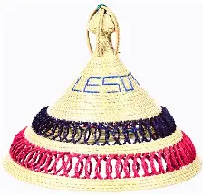
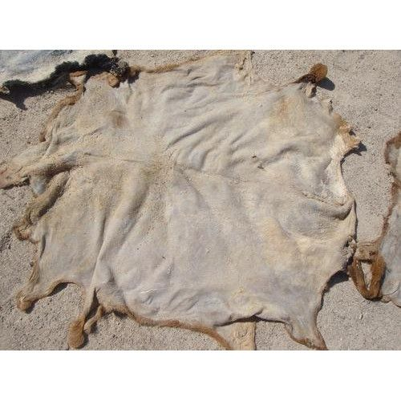
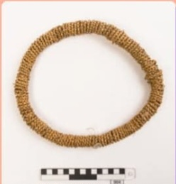

seana marena

This is one of the olders and most traditional
styles of Basotho blanked.
It features a diamond-sheped
design with a cener star and it is often
worn by chiefs and other traditional leaders.This blanket is made of wool.Learn more
Motlatsi-Khasana
This is one of the olders and most traditional styles of Basotho blanked. It features a diamond-sheped design with a cener star and it is often worn by chiefs and other traditional leaders.Learn more
Mokhahla
this is one of blankets made of cow skin.The cow skin is to be made soft to ball it a blanket.learn more
Lehlosi
Atraditional sesotho chiefly blanket, historically made the hide of a cat like a leopart and worn by chiefs and kings on special occasions.learn more

Setipana
It is a blanked made of cowskinw,it was normally worn during the day.Learn more
kobo e thokoa

Blanket worn by sherperts when behind animals.This is made of grey wool with black straps.Learn more
Seshoeshoe
It is a dress made by a printed fabric, which is primary symbol of basotho culture pride and unity. The dress is normaly worn inp ocations like festivals.Learn more
T'sea

This is a triangular sheepskin undergarments, which is worn by young boys to cover thier private parts.Learn more>
Leqapha
This is a cloth with a rought texture, this cloth can be of different size regading the wighst again color regardless of the aggrement people agreed on and which one loves. The cloth is worn by being rolled around the weighst and around.Leqapha is attire worn by people who returned from initiation school.Learn more
Tsoape
This is a cloth worn by kids just to cover the frant part not the bottoms.Learn more
Lefoqo kapa setipe
It is made of cow 's skin, which was worn by gentlemens.Learn more
Thethana ea tsikitlana

It is a mini dress which is worn my ladies.This dress is made of a plant called tsikitlana.Learn more
Thethane
It is a mini dress like made of sac. This attire is dressed by young ladies and female children.Learn more
Mose oa khomo

This is the dress made of cow skin, the dress is worn by married women, additionally, the cow skin is divided into two parts being the part covering their brest.Learn more
Kuoane
This is hat with an unclosed top place, surrounging the head which is made of goat,sheep or wild animal's skin .This hat is worn by chieves.Learn more
Mokorotlo
This is one of the most beautiful hat made of natural fibre being weave grass. The hat is used for sun protection.Learn more
Molia-Nyeoe
This is a hat which it's name translate to "he who execute judgement in court".It design is inspired by mountain called Qiloane.Learn more
Kharetsana
This is a crown worn by women and it is made up of animal skin.Learn more
kupahete
It is a woolen caps particularly by herd boys, to shield thier face from the cold and dust of the mountain winds.Learn more
Lifatla
they are the shoes Basotho worn which are made of animal skin.Learn more

Lesira

An attire worn by ladies in intiation school, which covers thier face from the sun.Learn more

{kind=link}
Sebeto
A skirt made from cowhide,dyed with red ochre and decorated with class and copper.The skite is worn by newly graduated female.Learn more
Setea

This is a basotho cloth worn by graduated female which act as thier dress to thier uniforn.It is made of sheep blanket.Learn more
setsiba
It is a uderware like made up of soft sheep 's skin making a fishtale like when worn and it is worn by men.learn more
Thari
An blanket like, which is made by sheep skin with the fit skin . It is used by women to carry thier babies.Learn more
Lipetja
Bracelets used to be worn by boys which is made by cow skin.Learn more
Senyepa
It is a belt made of beads.This belt is worn either on nack or on waist.Learn more
Kholokoane
This is a crown worn by women and it is made up of animal skin.Learn more
Lihoti
This is nacklace is worn by children consisting of grass bands with beads.Learn more
Morepo
This attire is worn by real women meaning those being female who had graduated.It is made of sheep skin whick had been softhen for ease and cormfortable to wear.Learn more
litopo
This are the shoes worn lately which is concidered shoes worn by sherpardsLearn more
Koto
This is a stick which was considered as part of the attire.Learn more
Click here to gain more infomation about basotho traditional attire: